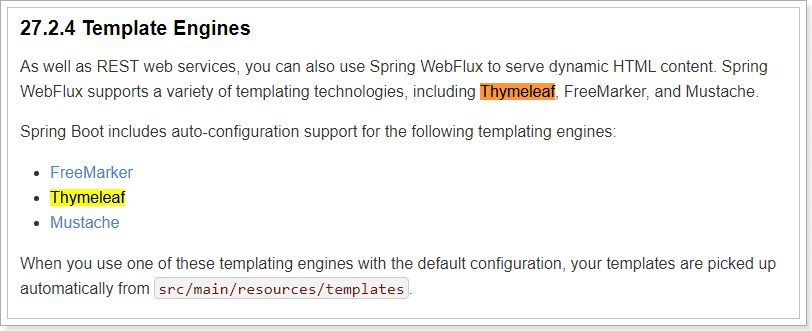
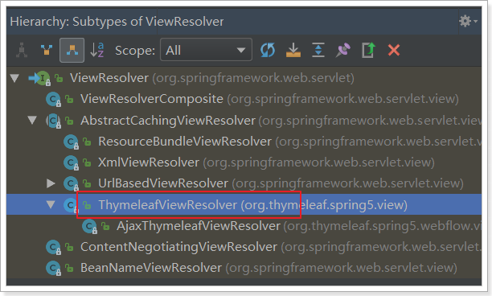
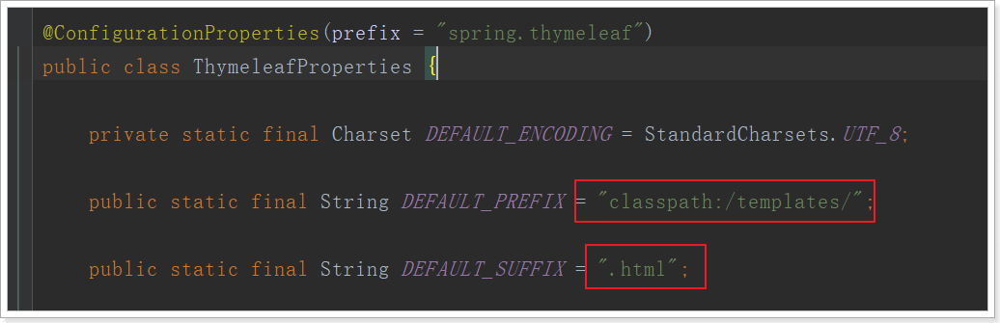
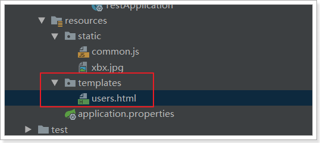
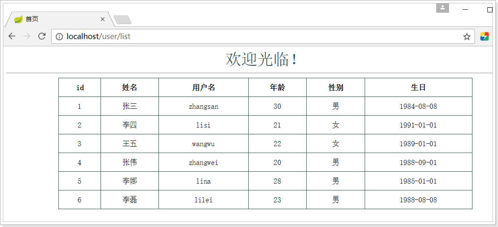

SpringBoot并不推荐使用jsp，但是支持一些模板引擎技术：

FreeMarker最大的缺点就是高亮没有，完全不知道写对了没有，今天的主角是Thymeleaf！
为什么是Thymeleaf？
简单说， Thymeleaf 是一个跟 Velocity、FreeMarker 类似的模板引擎，它可以完全替代 JSP 。相较于其他的模板引擎，它有如下四个极吸引人的特点：
- 动静结合：Thymeleaf 在有网络和无网络的环境下皆可运行，即它可以让美工在浏览器查看页面的静态效果，也可以让程序员在服务器查看带数据的动态页面效果。这是由于它支持 html 原型，然后在 html 标签里增加额外的属性来达到模板+数据的展示方式。浏览器解释 html 时会忽略未定义的标签属性，所以 thymeleaf 的模板可以静态地运行；当有数据返回到页面时，Thymeleaf 标签会动态地替换掉静态内容，使页面动态显示。
- 开箱即用：它提供标准和spring标准两种方言，可以直接套用模板实现JSTL、 OGNL表达式效果，避免每天套模板、改jstl、改标签的困扰。同时开发人员也可以扩展和创建自定义的方言。
- 多方言支持：Thymeleaf 提供spring标准方言和一个与 SpringMVC 完美集成的可选模块，可以快速的实现表单绑定、属性编辑器、国际化等功能。
- 与SpringBoot完美整合，SpringBoot提供了Thymeleaf的默认配置，并且为Thymeleaf设置了视图解析器，我们可以像以前操作jsp一样来操作Thymeleaf。代码几乎没有任何区别，就是在模板语法上有区别。
接下来，我们就通过入门案例来体会Thymeleaf的魅力：
提供数据
编写一个controller方法，返回一些用户数据，放入模型中，将来在页面渲染
@GetMapping("/all")
public String all(ModelMap model) {
// 查询用户
List<User> users = this.userService.queryAll();
// 放入模型
model.addAttribute("users", users);
// 返回模板名称（就是classpath:/templates/目录下的html文件名）
return "users";
}引入启动器
直接引入启动器：
<dependency>
<groupId>org.springframework.boot</groupId>
<artifactId>spring-boot-starter-thymeleaf</artifactId>
</dependency>SpringBoot会自动为Thymeleaf注册一个视图解析器：

与解析JSP的InternalViewResolver类似，Thymeleaf也会根据前缀和后缀来确定模板文件的位置：

- 默认前缀：
classpath:/templates/ - 默认后缀：
.html
所以如果我们返回视图：users，会指向到 classpath:/templates/users.html
一般我们无需进行修改，默认即可。
静态页面
根据上面的文档介绍，模板默认放在classpath下的templates文件夹，我们新建一个html文件放入其中：

编写html模板，渲染模型中的数据：
注意，把html 的名称空间，改成：xmlns:th="http://www.thymeleaf.org" 会有语法提示
<!DOCTYPE html>
<html xmlns:th="http://www.thymeleaf.org">
<head>
<meta charset="UTF-8">
<title>首页</title>
<style type="text/css">
table {border-collapse: collapse; font-size: 14px; width: 80%; margin: auto}
table, th, td {border: 1px solid darkslategray;padding: 10px}
</style>
</head>
<body>
<div style="text-align: center">
<span style="color: darkslategray; font-size: 30px">欢迎光临！</span>
<hr/>
<table class="list">
<tr>
<th>id</th>
<th>姓名</th>
<th>用户名</th>
<th>年龄</th>
<th>性别</th>
<th>生日</th>
</tr>
<tr th:each="user : ${users}">
<td th:text="${user.id}">1</td>
<td th:text="${user.name}">张三</td>
<td th:text="${user.userName}">zhangsan</td>
<td th:text="${user.age}">20</td>
<td th:text="${user.sex}">男</td>
<td th:text="${user.birthday}">1980-02-30</td>
</tr>
</table>
</div>
</body>
</html>我们看到这里使用了以下语法：
${}：这个类似与el表达式，但其实是ognl的语法，比el表达式更加强大th-指令：th-是利用了Html5中的自定义属性来实现的。如果不支持H5，可以用data-th-来代替th:each：类似于c:foreach遍历集合，但是语法更加简洁th:text：声明标签中的文本- 例如
<td th-text='${user.id}'>1</td>，如果user.id有值，会覆盖默认的1 - 如果没有值，则会显示td中默认的1。这正是thymeleaf能够动静结合的原因，模板解析失败不影响页面的显示效果，因为会显示默认值！
- 例如
测试
接下来，我们打开页面测试一下：

模板缓存
Thymeleaf会在第一次对模板解析之后进行缓存，极大的提高了并发处理能力。但是这给我们开发带来了不便，修改页面后并不会立刻看到效果，我们开发阶段可以关掉缓存使用：
# 开发阶段关闭thymeleaf的模板缓存
spring.thymeleaf.cache=false注意：
在Idea中，我们需要在修改页面后按快捷键：`Ctrl + Shift + F9` 对项目进行rebuild才可以。
eclipse中没有测试过。
我们可以修改页面，测试一下。